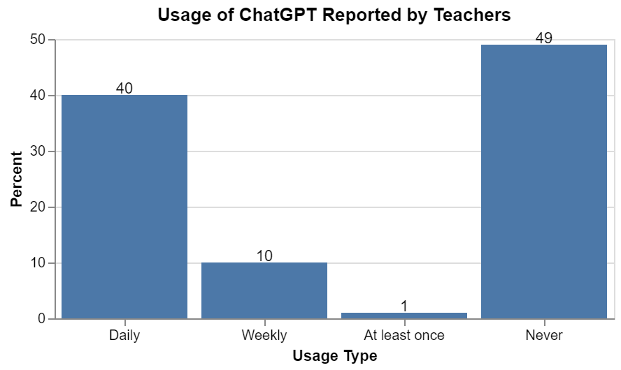

In early February, barely two months after the public launch of ChatGPT, Impact Research in partnership with the Walton Family Foundation conducted a survey of 1,000 K-12 Educators and 1,000 students aged 12-17 on their use of ChatGPT in school. The results were impressive.
Over half of the teachers surveyed claim to use ChatGPT (51%). Even more, of the people who do use it, the frequency of use is staggering. 40% of respondents report using ChatGPT weekly, and 10% report using it everyday. That leaves only 1% of the ChatGPT teachers using it less than weekly.
The usages by teachers vary. 30% of respondents cited lesson planning, 30% mentioned generating creative ideas for class, and 27% used it for background knowledge building. It seems the numbers for teachers show positive signs of early adoptions.
For students, the numbers are a little lower, but still exciting, 33% of the respondents aged 12-17 reported using ChatGPT for school. I posit that some students are afraid of this being considered cheating or have heard news of many districts banning the tool. This may be causing hesitation in early student adoption. I would propose however, ChatGPT integration in schools will end up providing benefits to learners.
Both groups, students and teachers, believe ChatGPT will improve learning.
All this sounds very promising for the future of education. During the first two years of COVID, in the US, after years of constant increase, reading and mathematics proficiency dropped to the levels they were two decades ago. This is the first drop in math skills since the National Center for Education Statistics started tracking. And it is the biggest drop in reading levels since 1990.
If new AI powered tools are going to improve learning for students, that will hopefully help us recover education standards back to pre-pandemic levels. Since these are the early days of AI research, this survey was a great gift. Not much academic research has had a chance to be published yet so any chance to get a glimpse of the impact is insightful.
I expect over the next several months and years there will be an arms race of publications to get meaningful data on the impacts of AI on education. But right now, the early results are looking promising. It seems the next step will be developing methods to best leverage these new tools.
Many of you may know that I am passionate about educational technology. For the past years I have worked as a software developer in the field, but I would love to return to academics to research these emerging technologies. I feel a passion reading and discussing these topics that I haven't felt in a while. I hope I can be a part of this movement.
One other quick finding I wanted to highlight in this paper is the impact AI is seeming to have on minority groups. The report shows while overall teacher adoption of ChatGPT was around 51%, for Black and Latino teachers this rate was around 69%. The press release and revealed information on the report did not provide much detail beyond this. But I think this is a very important finding. Other research has shown these groups to be prejudiced and biased against in AI algorithms. (Coded Bias is a great documentary on this topic if you are interested in learning more). With these new large language models available to the public and learning from user inputs, this increased use by previously underrepresented groups may provide an opportunity to reclaim and improve the bias in AI models. More research will need to be done, but it gives one hope.
If you are interested in reading the press release and drawing some of your own conclusions, you can check it out here.
Enjoyed this article? Subscribe to the RSS Feed!